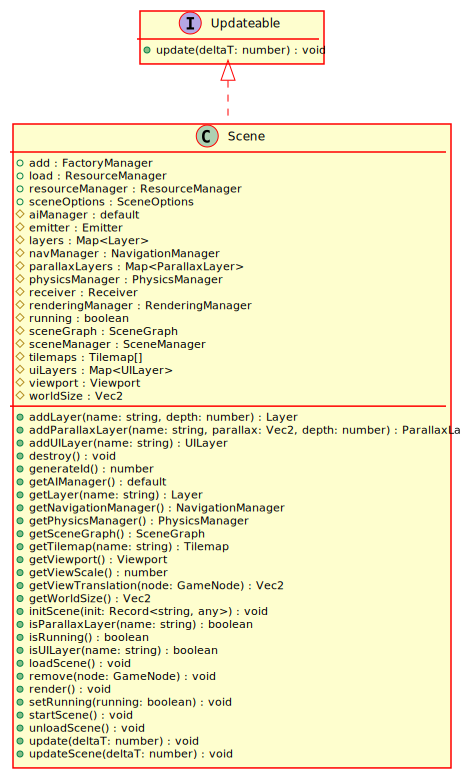

Hierarchy-Diagram
{kind=link}
Legend
 class
class
 interface
interface
 public property
public property
 protected property
protected property
 public method
public method
Hierarchy
- Scene
Implements
Index
Constructors
Properties
Methods
Constructors
constructor
Creates a new Scene. To add a new Scene in your game, use changeToScene() in @reference[SceneManager]
Parameters
viewport: Viewport
The viewport of the game
sceneManager: SceneManager
The SceneManager that owns this Scene
renderingManager: RenderingManager
The RenderingManager that will handle this Scene's rendering
options: Record<string, any>
The options for Scene initialization
Returns Scene
Properties
add
An interface that allows the adding of different nodes to the scene
Protected ai
The AI manager of the Scene
Protected emitter
The emitter for this scene.
Protected layers
A map from layer names to the layers themselves
load
An interface that allows the loading of different files for use in the scene. An alias for resourceManager
Protected nav
The navigation manager of the Scene
Protected parallax
A map from parallax layer names to the parallax layers themselves
Protected physics
The physics manager of the Scene
Protected receiver
The receiver for this scene.
Protected rendering
The renderingManager of the scene
resource
An interface that allows the loading and unloading of different files for use in the scene
Protected running
A flag that represents whether this scene is running or not.
Protected scene
The scene graph of the Scene
Protected scene
The manager of this scene.
scene
The configuration options for this scene
Protected tilemaps
This list of tilemaps in this scene.
Protected ui
A map from uiLayer names to the uiLayers themselves
Protected viewport
The viewport.
Protected world
The size of the game world.
Methods
add
Adds a new layer to the scene and returns it
Parameters
name: string
The name of the new layer
Optional depth: number
The depth of the layer
Returns Layer
The newly created Layer
add
Adds a new parallax layer to this scene and returns it
Parameters
name: string
The name of the parallax layer
parallax: Vec2
The parallax level
Optional depth: number
The depth of the layer
Returns ParallaxLayer
The newly created ParallaxLayer
addUILayer
Adds a new UILayer to the scene
Parameters
name: string
The name of the new UIlayer
Returns UILayer
The newly created UILayer
destroy
Destroys this scene and all nodes in it
Returns void
generate
Generates an ID for a GameNode
Returns number
The new ID
getAIManager
get
Gets a layer from the scene by name if it exists. This can be a Layer or any of its subclasses
Parameters
name: string
The name of the layer
Returns Layer
The Layer found with that name
get
Gets the NavigationManager associated with this Scene
Returns NavigationManager
The NavigationManager
get
Gets the PhysicsManager associated with this Scene
Returns PhysicsManager
The PhysicsManager
get
Gets the SceneGraph associated with this Scene
Returns SceneGraph
The SceneGraph
get
Retrieves a Tilemap in this Scene
Parameters
name: string
The name of the Tilemap
Returns Tilemap
The Tilemap, if one this name exists, otherwise null
get
Returns the scale level of the view
Returns number
The zoom level of the viewport
get
Returns the translation of this node with respect to camera space (due to the viewport moving). This value is affected by the parallax level of the @reference[Layer] the node is on.
Parameters
node: GameNode
The node to check the viewport with respect to
Returns Vec2
A Vec2 containing the translation of viewport with respect to this node.
get
Returns the Viewport associated with this scene
Returns Viewport
The current Viewport
get
Gets the world size of this Scene
Returns Vec2
The world size in a Vec2
init
A lifecycle method that gets called immediately after a new scene is created, before anything else.
Parameters
init: Record<string, any>
Returns void
is
Returns true if this layer is a ParallaxLayer
Parameters
name: string
The name of the layer
Returns boolean
True if this layer is a ParallaxLayer
is
Returns whether or not the Scene is running
Returns boolean
True if the scene is running, false otherwise
isUILayer
Returns true if this layer is a UILayer
Parameters
name: string
The name of the layer
Returns boolean
True if this layer is ParallaxLayer
load
A lifecycle method that gets called when a new scene is created. Load all files you wish to access in the scene here.
Returns void
remove
Removes a node from this Scene
Parameters
node: GameNode
The node to remove
Returns void
render
Collects renderable sets and coordinates with the RenderingManager to draw the Scene
Returns void
set
Sets the scene as running or not
Parameters
running: boolean
True if the Scene should be running, false if not
Returns void
start
A lifecycle method called strictly after loadScene(). Create any game objects you wish to use in the scene here.
Returns void
unload
A lifecycle method that gets called on scene destruction. Specify which files you no longer need for garbage collection.
Returns void
update
Updates this object.
Parameters
deltaT: number
Returns void
update
A lifecycle method called every frame of the game. This is where you can dynamically do things like add in new enemies
Parameters
deltaT: number
Returns void
Scenes are the main container in the game engine. Your main scene is the current level or menu of the game, and will contain all of the GameNodes needed. Scenes provide an easy way to load assets, add assets to the game world, and unload assets, and have lifecycle methods exposed for these functions.